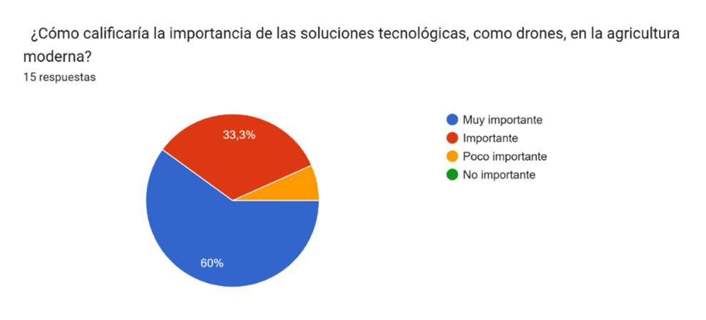

Lluvia Artificial
Descripción
La Lluvia artificial tiene como objetivo la aglomeración de nubes para crear lluvia artificial, el uso de este mecanismo es para combatir el problema de la sequía o falta de agua en los países. Para poder crear esta lluvia se suelen utilizar aviones cargados de químicos o drones con un sistema de descargas eléctricas.
Funcionalidad
La creación de la lluvia artificial consiste de dos factores:
- Este primer factor es la creación de un dron que lleva consigo un sistema de descargas eléctricas para modificar las propiedades físicas de las nubes y así estimular la precipitación y condensación de los niveles de agua que hay dentro de las nubes.
- Este segundo factor trata sobre el estudio del clima, más exactamente de las nubes, ya que toca estudiar el sitio y lugar adecuado para mandar los drones con las descargas eléctricas y así crear la lluvia artificial.
Objetivos
El objetivo de esta idea es solucionar la sequía en el mundo, ya que con esta idea y con el estudio del clima en los lugares que lo necesitan podemos llegar a la creación de la lluvia artificial y dejar de sufrir por agua o dejarnos de preguntar ¿Cuándo va a llover?
Con esta idea vamos a dejar de tener escasez de alimentos por la falta de agua, también podremos ayudar al ámbito industrial que necesita agua para poder crear su producto. Con esto también ayudamos a la fauna y flora ya que podemos evitar incendios, ayudar a reducir los problemas que nos afectan con fenómenos como el fenómeno de El Niño y así ayudar a los animales para que su hábitat no se extinga ni ellos tampoco.
Justificación
Situación Problemática
Sequía
Uno de los problemas principales es la falta de nuestro recurso primordial para vivir, el agua, uno de los recursos más apreciados del planeta y uno de los más escasos en ciertas regiones o partes del mundo debido a los efectos del cambio climático y/o fenómenos naturales.
Análisis de Situación Actual
Las consecuencias serán devastadoras, poniendo a millones de personas en riesgo: más olas de calor y más extremas, sequías más extremas, y subida del nivel del mar, entre otras amenazas.
Advertencia Climática
La Organización Meteorológica Mundial ha informado de que existe un 47% de probabilidades de que la temperatura media mundial durante todo el quinquenio 2024-2028 supere en 1.5 °C la de la era preindustrial. Además, hay un 80% de probabilidades de que la temperatura media anual del planeta supere "temporalmente" los 1.5 °C por encima de los niveles preindustriales durante al menos uno de los próximos cinco años.
El informe señala que, además, hay un 86% de probabilidades de que al menos uno de estos años establezca un récord de temperatura, superando a 2023, que es actualmente el año más cálido.
De hecho, esto es lo que ha ocurrido en los últimos 12 meses, ya que la temperatura media mundial de junio de 2023 a mayo de 2024 fue la más alta registrada, con 1,63 °C por encima de la media preindustrial de 1850-1900, según el conjunto de datos ERA5 de Copernicus Climate Change.
Análisis de casos
1. Racionamiento de agua en Bogotá
El alcalde de Bogotá, Carlos Fernando Galán, confirmó que el racionamiento de agua se mantendrá hasta que los embalses crezcan más del 15%. Aunque el sistema Chingaza alcanzó el 50% de su capacidad, aún está muy por debajo de sus niveles históricos.
Fuente: Redaccionelpais. (2024). Racionamiento de agua en Bogotá: alcalde Galán confirmó que la medida se mantendrá hasta que los embalses crezcan más del 15% - El País
2. Sequía histórica en Nueva York tras 150 años
Nueva York experimenta una "sequía repentina" o flash drought, resultado de la falta de lluvias y el aumento de las temperaturas. En octubre, solo cayeron 0.02 centímetros de lluvia en Central Park, a pesar del inicio del invierno.
Fuente: Jonathan.H. (2024). Sequía histórica en Nueva York tras 150 años: a qué se debe la falta de lluvia pese a inicio de invierno en Estados Unidos | La República
3. Agravamiento de la sequía en Durango, México
En 15 municipios de Durango se agudizaron las condiciones de sequía durante la primera quincena de octubre. Según la Comisión Nacional del Agua (Conagua), las lluvias por debajo del promedio y el ambiente caluroso favorecieron la permanencia y el incremento de las áreas con sequía moderada a excepcional.
Fuente: JuanM.C. (2024). Sequía se agrava en 15 municipios de Durango
Resultados de Encuestas
Imagen 1(Valores de la encuesta que utilizamos para el levantamiento de información.)
Imagen 2 (Valores donde escogen la forma de cómo se puede crear la lluvia artificial)

Imagen 3(Encuesta donde sabemos que tan importante es combatir la sequía en la comunidad )

Imagen 4(Encuesta donde queremos saber si para la comunidad es importante incluir nuevas tecnologías en la agricultura)
Imagen 5(Encuesta que nos ayuda a saber en qué tema nos debemos centrar más para el desarrollo del mecanismo)
Imagen 6(Encuesta donde podemos saber las dudas y preocupaciones al implementa el mecanismo)
Imagen 7(Encuesta donde sabemos como reciban el mecanismo si funciona)
Imagen 8(Encuesta donde sabemos si la idean puede ser llamativa al publico o le falta informacion)/p>
Imagen 9(Encuenta donde sabemos las preocupacuones del publico al implementar el mecanismo)
Imagen 10(Encuesta donde sabemos la confianza que le tiene a la idea)
Imagen 11(Encuesta donde sabemos en cual tema nos debemos centrar en la investigacion.)
Conclusión
La encuesta muestra que la mayoría de los encuestados tiene algún conocimiento sobre la lluvia artificial y la considera relevante, especialmente para combatir la sequía. Prefieren métodos como las descargas eléctricas con iones en lugar del uso de químicos, y destacan beneficios como la mitigación de sequías, la disponibilidad de agua y la mejora de cultivos. Esto refleja una valoración positiva hacia esta tecnología, aunque con una inclinación por métodos que puedan percibirse como menos invasivos para el medio ambiente, también podemos apreciar que la mayoría de las personas no les convence implementar este método por las afectaciones climáticas que se puedan desarrollar y afectar el medio ambiente.
Diagrama de Ishikawa
Conclusión
A partir del análisis que se puede hacer de este diagrama se concluye que la mayoría de los factores que contribuyen a las sequías y el uso inadecuado de los recursos naturales a nivel mundial son, en gran medida, consecuencia de actividades humanas, ya sea por el desconocimiento de él gran efecto que tienen sus acciones o por la falta de interés en proteger estos ecosistemas. Cómo se puede apreciar, la gestión ineficiente de recursos naturales y el desperdicio de agua son sectores en los que puede haber una gran mejoría, si se invirtiera más capital y se utilizará más tecnología para ayudar con la regulación de estos sectores, además, esto también nos permite ver el poco interés que parecen tener las empresas y gobiernos en la mejoría de estos sectores anteriormente mencionados. A su vez, se puede ver qué implementar políticas económicas y legislaciones gubernamentales que incentiven el ahorro de agua y el uso responsable de los recursos naturales es algo primordial y que no se debería de para por alto. Además, es de suma importancia modernizar las tecnologías empleadas en el sector industrial y agrícola para reducir el consumo excesivo de agua, contribuyendo a un aprovechamiento más.
Normativa Legal en Colombia
Colombia no cuenta con leyes específicas para regular el uso de la inteligencia artificial, pero existen consideraciones importantes para la siembra de nubes:
1. Permisos de Entidades Reguladoras
- Ministerio de Ambiente y Desarrollo Sostenible: Establece las políticas ambientales del país.
- IDEAM: Instituto de Hidrología, Meteorología y Estudios Ambientales.
- Aeronáutica Civil de Colombia: Regula las operaciones aéreas.
- Corporaciones Autónomas Regionales (CAR): Regulan acciones que afecten el medio ambiente a nivel regional.
- Comunidades locales: Incluye consulta previa a comunidades indígenas si es necesario.
2. Leyes Establecidas por el Gobierno
- Ley 99 de 1993, artículo 63: Define los parques naturales como bienes imprescriptibles.
- Ley 2ª de 1959, artículos 13 y 14: Establece la prohibición de actividades en Parques Nacionales Naturales.
- Decreto Ley 2811 de 1974, artículo 328: Protege áreas con fauna y biodiversidad sobresalientes.
Teoría de Proyectos y Entornos Actuales
Esta idea se ha implementado y estudiado en China, Estados Unidos, Emiratos Árabes Unidos, y España.
China
China ha intensificado el uso de lluvias artificiales para combatir la sequía en regiones alrededor del río Yangtzé. Utilizan "cazadores de nubes", aviones que disparan cohetes con yoduro de plata para sembrar nubes y provocar lluvias. Sin embargo, esto puede tener efectos impredecibles en el medio ambiente.
Estados Unidos
En EE.UU., la generación de lluvia artificial se usó en el ejército antes de ser prohibida por las Naciones Unidas. Actualmente, se utiliza para evitar tormentas violentas.
Emiratos Árabes Unidos
Los EAU han realizado 219 operaciones de siembra de nubes en 2024. Utilizan aviones equipados con bengalas especiales que disparan partículas cristalinas similares al hielo directamente a las nubes. También han implementado una flota de drones que lanzan descargas eléctricas a las nubes, creando lluvia sin productos químicos.
España
España intentó generar lluvia artificial a través del "Proyecto de Precipitación Mejorada", pero no tuvo éxito en aumentar la lluvia. Sin embargo, han tenido éxito en la lucha contra el granizo para evitar pérdidas agrícolas.
Entorno Actual
La última actualización del proyecto es la integración de drones con descargas eléctricas para la creación de la lluvia artificial en los Emiratos Árabes Unidos. Este método tiene menos efectos secundarios que el uso de aviones con químicos, como el yoduro de sodio utilizado en China.
Ejemplos Actuales en Colombia
En Colombia, la técnica se conoce como "bombardeo de nubes". Se utilizó por primera vez en 1984 en Bogotá, durante una sequía severa. Con ayuda de la NASA, la Alcaldía de Bogotá realizó el bombardeo de nubes utilizando yoduro de plata para diseminar las nubes sobre la ciudad.
Costos
El proyecto de lluvia artificial en los Emiratos Árabes Unidos cuenta con un financiamiento de $1.5 millones y seis aviones. El objetivo es mejorar la disponibilidad de agua en regiones áridas y semiáridas, aspirando a ser líderes en lluvia artificial.
Disciplinas Involucradas
Ingeniería Ambiental
Estudia los problemas del planeta de forma científica e integrada, promoviendo un desarrollo sostenible.
Ingeniería Industrial
Analiza, diseña y optimiza sistemas productivos y logísticos para maximizar el rendimiento de procesos.
Ingeniería Mecatrónica
Desarrolla dispositivos que integran electrónica, mecánica, sistemas y control, incluyendo robótica.
Ingeniería Aeronáutica
Se dedica al diseño, fabricación y mantenimiento de aeronaves, misiles y satélites.
Química
Estudia la composición, propiedades y estructura de la materia a nivel microscópico y sus transformaciones.
Física
Estudia la materia, su movimiento y comportamiento en el tiempo y espacio, incluyendo la conducta de los cuerpos en el universo.
Robótica
Se enfoca en el estudio, diseño y desarrollo de sistemas y máquinas inteligentes capaces de realizar tareas autónomas.
Cómo hace para funcionar
Lo primero que se debe de hacer es identificar la nube óptima que se utilizara para inducir la precipitación, para esto se utilizan herramientas meteorológicas avanzadas; pero lo que se está buscando es una nube cumulonimbos, que la temperatura este por debajo de los 0° Celsius y que tenga suficiente humedad y/o hielo, pues estas condiciones son las óptimas para la condensación.
Una vez que se ha identificado la nube adecuada, se introduce el sistema que utiliza iones positivos como núcleos de condensación. Estos iones se generan mediante un dispositivo conocido como generador de iones y se dispersan en la atmósfera utilizando un dron equipado con el generador y utilizando el método de la descarga corona. La idea de esta parte es que los iones funciones como núcleos de condensación en las cuales se va a reunir el hielo y agua para que las nubes tengan suficientes gotas lo suficientemente pesadas para que inicie la lluvia.
Diagramas de flujo
1. Recolección de los datos meteorológicos:

2. Generación y propagación de iones:
3. Condensación de las gotas de agua:
Bocetos de los dispositivos que se van a utilizar
1. Generador de iones
2. Dron
Referencias
- Braga, N. C. (s/f). Generador de iones (CIR14958S). Com.Mx; INCB. https://www.incb.com.mx/banco-de-circuitos/21160-generador-de-iones-cir14958s
- Concepto Dron Ilustración Estilo Plano Marco Alambre. (s/f). Depositphotos. https://depositphotos.com/es/illustration/drone-concept-illustration-blueprint-wire-frame-style-323611152.html
- El esquema eléctrico de Dumbo – Prometec. (s/f). Prometec.net. https://www.prometec.net/el-esquema-electrico-de-dumbo/
- Esneca, C. (2023, diciembre 7). ¿Qué estudia la robótica? Esneca; Esneca Business School. https://www.esneca.lat/blog/que-estudia-la-robotica/
- Ingeniería aeronáutica: Qué es, dificultad, campo laboral y más. (2018, marzo 28). Carreras Universitarias. https://micarrerauniversitaria.com/c-ingenieria/ingenieria-aeronautica/
- Jervis, T. M. (2017, mayo 11). ¿Qué Estudia la Física? Lifeder. https://www.lifeder.com/que-estudia-fisica/
- Portillo, G. (2022, febrero 3). Lluvia artificial. Meteorología en Red. https://www.meteorologiaenred.com/lluvia-artificial.html
- Sierra, J. C. G. (2024, abril 17). ¿La técnica de ´bombardeo de nubes´ servirá para que llueva en Bogotá y sus embalses y se supere la crisis por agua? Colombia.com. https://www.colombia.com/actualidad/nacionales/la-terrible-sequia-de-1984-en-colombia-que-la-nasa-ayudo-a-solucionar-462771
- Suárez, P. (2010, marzo 16). DISPOSITIVO GENERADOR DE IONES NEGATIVOS Y POSITIVOS. Patentados.com; Patentados.com. https://patentados.com/2010/dispositivo-generador-de-iones-negativos
- Unsplash,. (2024, junio 5). Cambio climático: hay un 80% de probabilidades de que el planeta siga calentándose los próximos cinco años por encima de los 1,5 grados. Noticias ONU. https://news.un.org/es/story/2024/06/1530326
- Wetto, M. (2017, abril 21). ¿Qué Estudia la Química? Lifeder. https://www.lifeder.com/que-estudia-la-quimica/
- JuanM.C.(2024). Sequía se agrava en 15 municipios de Durango
- Jonathan.H.(2024). Sequía histórica en Nueva York tras 150 años: a qué se debe la falta de lluvia pese a inicio de invierno en Estados Unidos | La República
- Redaccionelpais.(2024). Racionamiento de agua en Bogotá: alcalde Galán confirmó que la medida se mantendrá hasta que los embalses crezcan más del 15% - El País